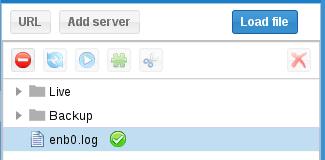
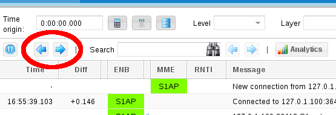

icon means the client is not connected whereas
means the client is connecting and
means the client is connected.
icon means the client is not connected whereas
means the client is connecting and
means the client is connected.
LTE Web Interface is a HTML5 graphical user interface.
It allows to analyze Amarisoft LTE software logs and get information from the system.
It can communicates using WebSocket for real time analysis.
It also interact with LTE UE simulator to generate and execute scenario.
Using node webkit, it is possible to use it as a standalone application and associate it with your log files in your file browser.
Mandatory:
Optional:
Node Webkit must be installed on your system.
Simply copy all file to a HTTP server directory.
For apache:
cp -r <directory> /var/www/html/lte
Use your HTTP server URL.
For apache, http://<server name>/lte/
If you are not familiar with Linux and web servers, you may need to look on the web for information on how to setup a web server correctly (Depending on your Linux flavour, there are too many possible environment, which is out of the scope of this document).
However, if you use Apache with Fedora, here are the common things you can try:
sudo service httpd status
If it is inactive, you may start it:
sudo service httpd start
SELinux may prevent apache to host pages properly. You may disable it this way:
sudo setenforce 0
You may use the GUI as a standalone application.
For this, you need Node WebKit to be installed on your machine.
To install it on Fedora:
sudo dnf install nodejs npm sudo npm install -g nw --unsafe-perm=true
Then, copy directory wherever you want, and you can use it this way:
<directory>./logview.sh <file1.log> <file2.log> ...
On windows, follow https://nwjs.io/ to download archive.
Extract it to <nw-dir>.
You may place it to c:\Program Files\nwjs
If you want to place it elsewhere, you will have to edit logview.bat to change path
To open application, you just need to double click on logview.bat file.
You may open it with log file as command line argument.
If wireshark is installed on your system, you will benefit advanced logs for different layers.
On windows system, you may update tshark path by editing
TSHARK_WIN32 or TSHARK_LINUX variables in client.js
according to your system.
The GUI is divided into several panels.

To display log and/or interact with Amarisoft software, you need to add a client.
The list of your client is displayed on left panel of the interface.
You can display logs generated by an Amarisoft LTE software by clicking on
Load file button in client panel and selecting the log file.
A entry will be added on client panel and logs will be parsed and displayed on log panel.
The green tick means the client is enabled and logs are displayed.
When selecting a client, a list of actions will be available on the top toolbar (See Client action).
To create a WebSocket client, you first need to enable remote API on Amarisoft software
component (MME, eNB, IMS, UE Simulator).
This is done via com_addr parameter. Please refer to the component documentation
for more detail.
Then click on Add server button:
Enter name that will appear on client panel and the address you entered as com_addr.
After clicking on update button, the client will try to connect.
If connection is successful, the configuration window will appear so that you configure logs:

For each layer you can define:
log_options of its configuration file.log_options of its configuration file.
Of course, you can keep default configuration and simply click on Update.
The icon means the client is not connected whereas
means the client is connecting and
means the client is connected.
When connected, a new tab will appear in main tab panel and provide you advanced features.
You can retrieve a log from any URL with this client.
Click on URL button and enter parameters.
The icon means the log file was not loaded whereas
means it has been successfully parsed.
Here are the action you can perform on a client
 to remove client.
to remove client.
You can store your log files on the Web Server to access it through the interface.
You need to put your log files in store directory on the server.
NB: Subdirectories are allowed.
Then expand the store node in client panel, and you’ll have access to all the files.
Select them and click on enable button (or double click) to display logs.
Note that your HTTP server requires php support.
You can change the configuration of URL and WebSocket clients.
Select client line click on configuration button.
Update config as wanted and click on Update button.
When a client is enabled, logs appear on log panel.
You can enable multiple client together to mix logs. This may be useful to mix MME,
eNB, IMS and/or UE logs.
Each line represent a log.
Columns are:
- means same as previous log).
max_size has been set for its layer,
a icon will be displayed.When a log line is selected, use and buttons to highlight previous or next log of same layer:
Fill search field to search in messages, ID, info and details. Use and buttons to highlight previous or next match:

TBD
If your logs have physical layer included, you can display statistics.
Click on Analytics button to open window.
On left, you will have the list of radio connections.
You can select one or several by maintaining shift key.
It will display statistics in charts.
Average time parameter allow smoothing curves.
If your logs have physical layer included, you can display ressource block allocation by clicking button:
Use mouse wheel to scale.
Drag and drop to move inside allocations.
Hashed block are not acknowledged packet.
You can select allocated blocks, this will also select associated log in log panel.
If your logs have physical layer included with signal level activated (phy.signal=1), you can display the QAM constellation and the channel response time.
You should take a look at PHY layer logs. When a yellow star is diplayed, click on it and a bottom panel should appear.
This field allow logs time to be relative to it.
You can set it manually or by right clicking on a log line and selecting Set time origin
You can click on to pause log update.
This may be useful when a WebSocket client is constantly adding logs.
NAS type for UE scenario
ctrl then maintain left click to select x range
ctrl + shift then maintain left click to select x and y ranges
ctrl + left click to reset x and y ranges
left click to move selected ranges
mouse wheel to zoom in/zoom out
ltewww is copyright (C) 2012-2025 Amarisoft. Its redistribution
without authorization is prohibited.
ltewww is available without any express or implied warranty. In
no event will Amarisoft be held liable for any damages arising from
the use of this software.
For more information on licensing, please refer to license.pdf file.